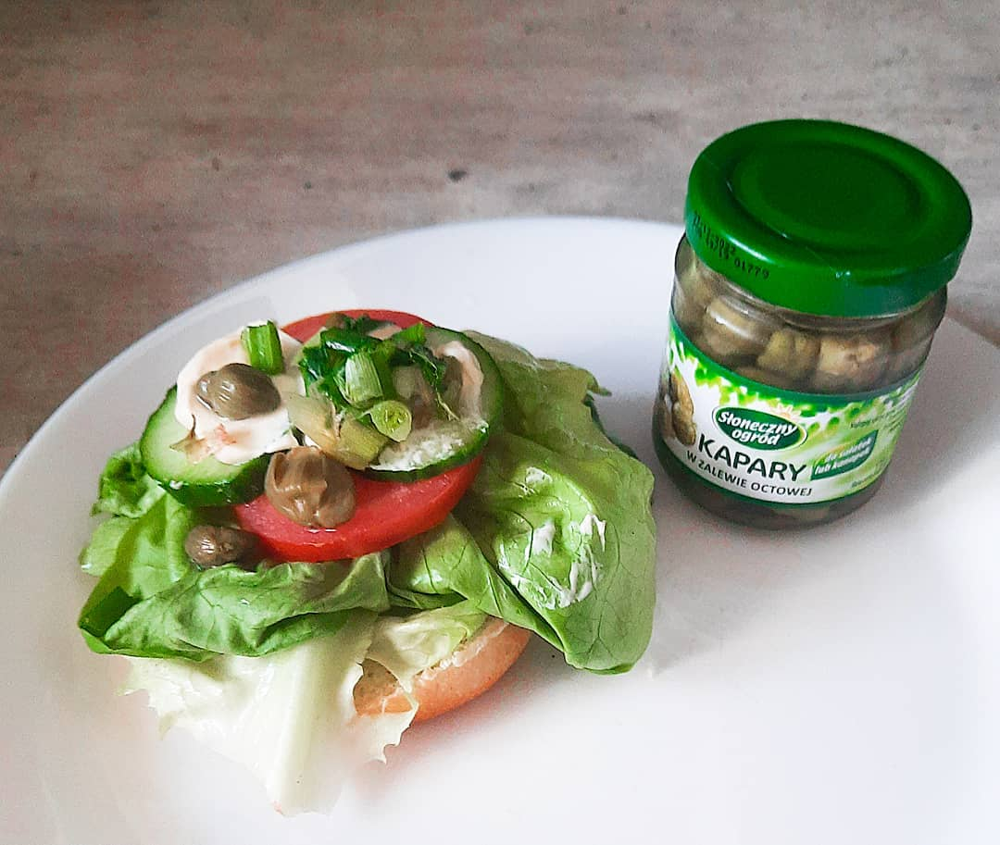

Kapary podľa @kuchniablada — Normy Jedál
Na śniadanie kanapka z kaparami🤗
.
.
.
#sniadanie #kanapka #kapary #warzywa #fit #polishgirl #jemzdrowo #dieta #fitsniadanie #wiosna #sun #bydgoszcz #kuchenneinspiracje #delicious #photo #mamawkuchni #natalerzu #love #instaphoto #mojapasja #odchudzanie #zdrowystylzycia